Performance
Fast, infrastructural, credible.
Stats, motion, and copy should imply throughput, scale, and confidence.
Chutes visual system
Dark-first infrastructure brand for AI builders
Chutes works best when it feels fast, technical, and a little cinematic. The interface stays mostly dark and disciplined so the moss accent, headline scale, motion, and rare gradient moments land with real intent.
Performance
Stats, motion, and copy should imply throughput, scale, and confidence.
Clarity
Body copy stays clean and supporting UI stays quiet enough to scan instantly.
Restraint
Use the gradient rarely, keep moss primary, and let dark surfaces do most of the work.
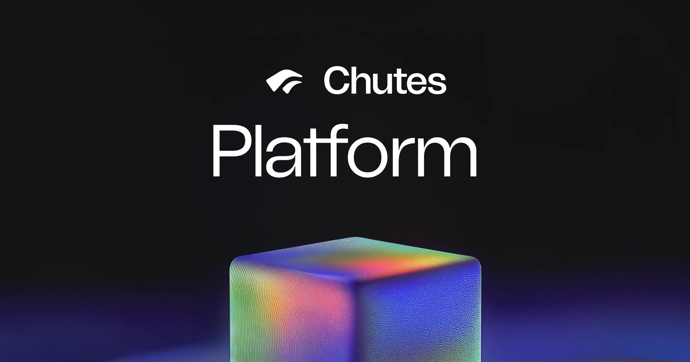
The brand is strongest when these ideas show up together: dark layered shells, selective accenting, bold headline moments, and product-minded technical clarity.
Use layered neutral surfaces, subtle blur, and crisp borders instead of bright chrome.
Moss marks the important action. Papaya can support, but should not compete.
Use moss-to-rose-to-indigo for hero words and big moments, not routine interface chrome.
Docs, app chrome, and marketing all share the same dark technical foundation.
Most Chutes pages are built from ink neutrals, a single green accent, bold Tomato headlines, restrained Neue Haas body copy, and mono for code or structured data.
#0C0C0C
Primary canvas and deep shadows.
#121212
Nav bars, sections, and glass surfaces.
#151515
Raised cards and hero containers.
#8BFFC6
Active state, stats, key status, primary emphasis.
#FFAB96
Warm alternate accent for occasional contrast.
#B4C1EE
Cool informational or data-support accent.
#E3EC9F
Soft supporting tint for premium or atmospheric moments.
Moss to rose to indigo.
Reserve for breakthrough moments only.
Ink neutrals should do most of the visual heavy lifting. Bright accents land harder when the interface around them stays disciplined.
Display / Headlines
Tomato Grotesk carries the brand.
Use for headlines, nav, buttons, badges, and short labels. Keep tracking tight and let scale do the work.
Body / Docs / UI Copy
Neue Haas Unica stays readable and understated, which lets the display moments remain the hero without the body copy feeling generic.
Mono / Code / Data
const model = "deepseek";
const accent = "#8BFFC6";
const surface = "ink-800";
Use mono for shell commands, code blocks, key-value data, and precise technical labels.
Chutes is not just marketing art. The strongest pages echo the live app and docs: dark chrome, moss for focus, search-led navigation, roomy cards, and technical content that still feels premium.
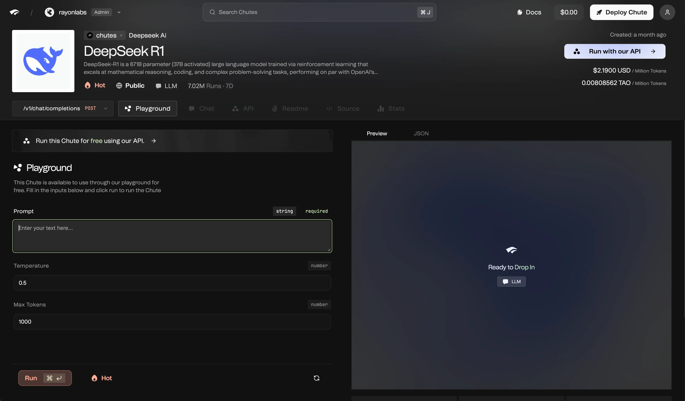
App and docs chrome stay dark, active states lean moss, and screenshots should be framed inside quiet rounded shells.
Bright primary, quiet secondary, moss for product emphasis, papaya only selectively.
Chips are compact and legible. Search fields stay rounded, dark, and calm.
Key figures sit in moss on raised cards with muted supporting text in ink-300.
Available GPUs
1.2k
Best paired with a short, useful supporting note.
The docs language stays close to VS Code Dark+: technical, legible, and restrained.
import { Chutes } from "@chutes/sdk";
const client = new Chutes({ apiKey: "<your-api-key>" });
const result = await client.chat.create({ model: "deepseek", prompt: "hello" });
The core brand mark stays simple and mostly monochrome. Color comes in through curated partner moments, while provider walls are stronger when kept grayscale and low-noise.
Default brand mark for nav, headers, docs, and product shell contexts.
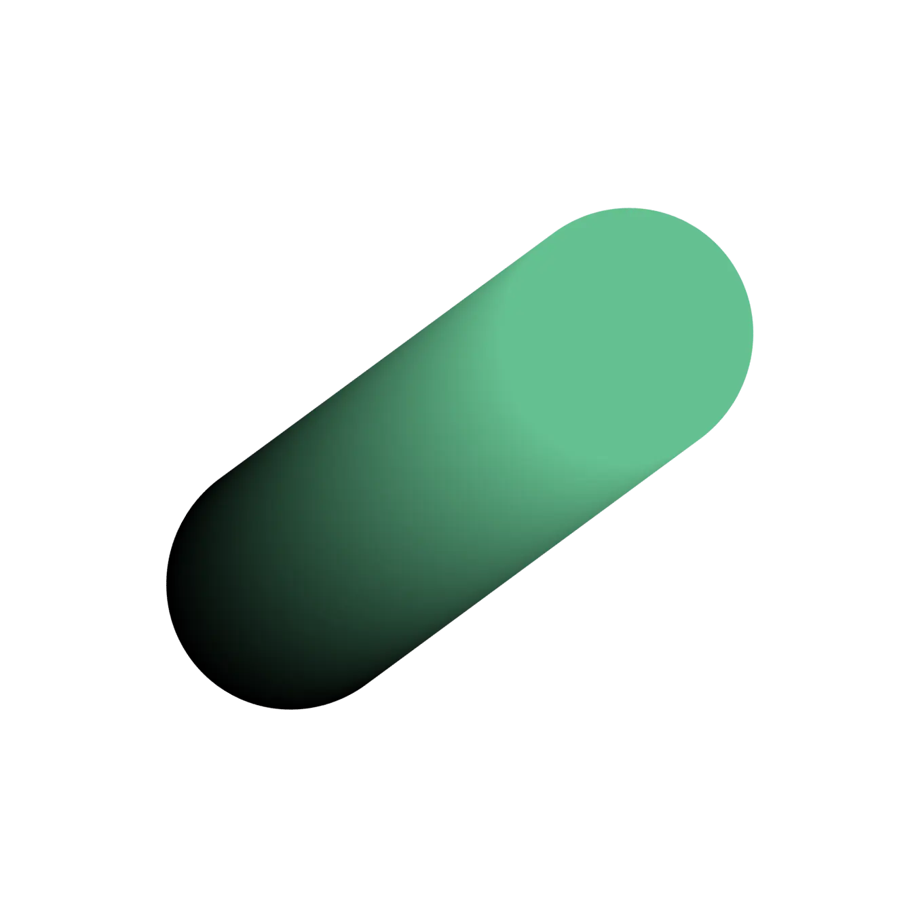
Secondary emblem for compact placements.Use for tiles, avatars, cards, or places where the main mark is too wide.
Keep it small, square, and high-contrast.
Color can appear here, but in curated low-density bands rather than crowded grids.
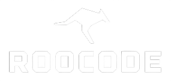
When these appear as a set, grayscale treatment keeps the Chutes brand in control.
The Chutes system extends beyond UI: ambient motion, editorial photography, screenshots, OG art, and product cards all share the same dark-first, premium-technical attitude.
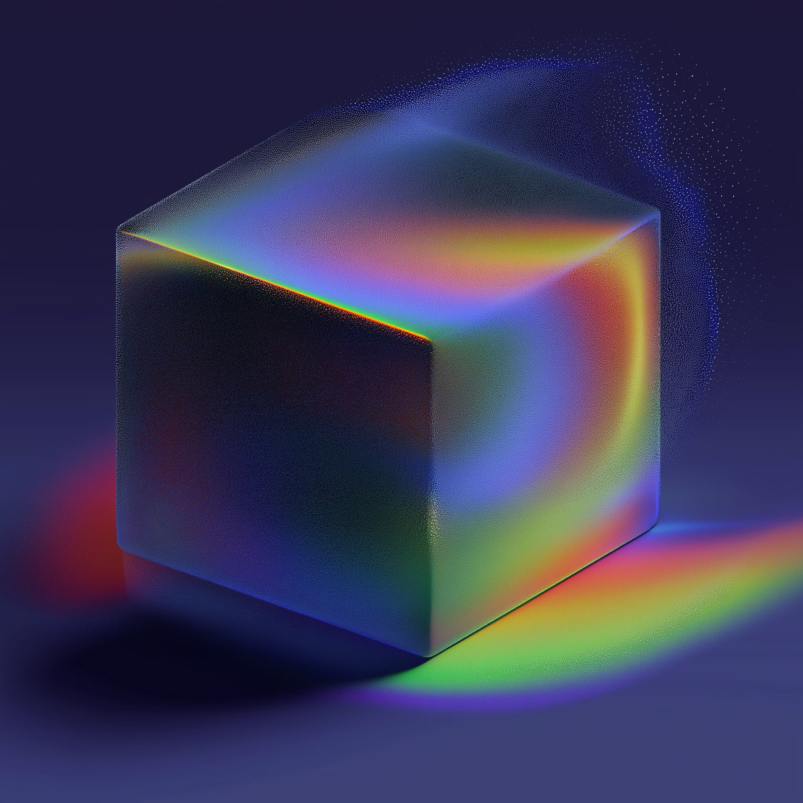
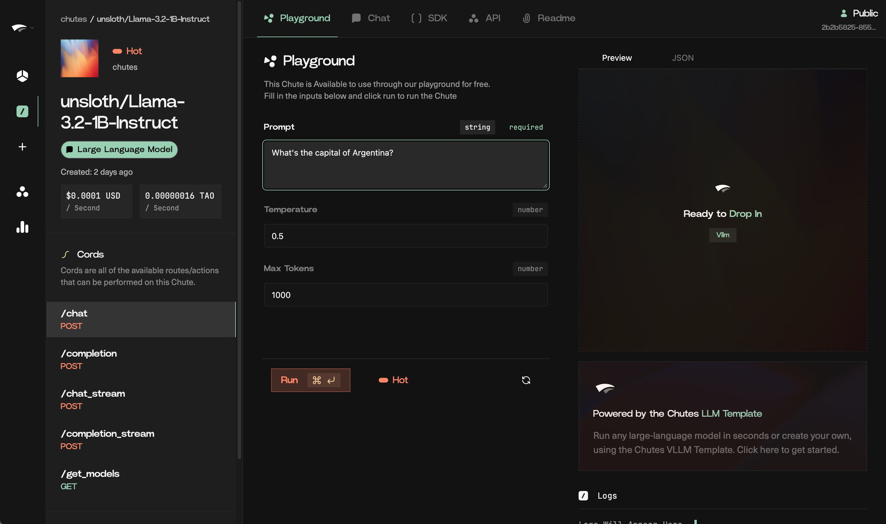
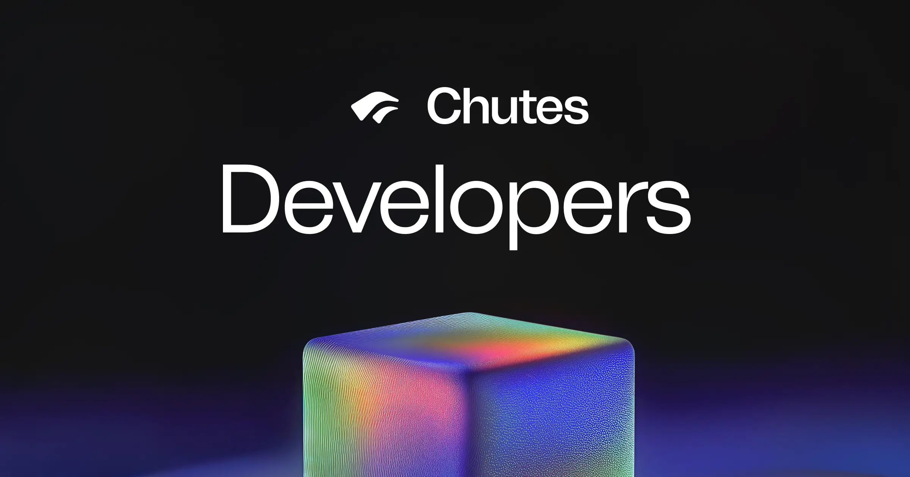
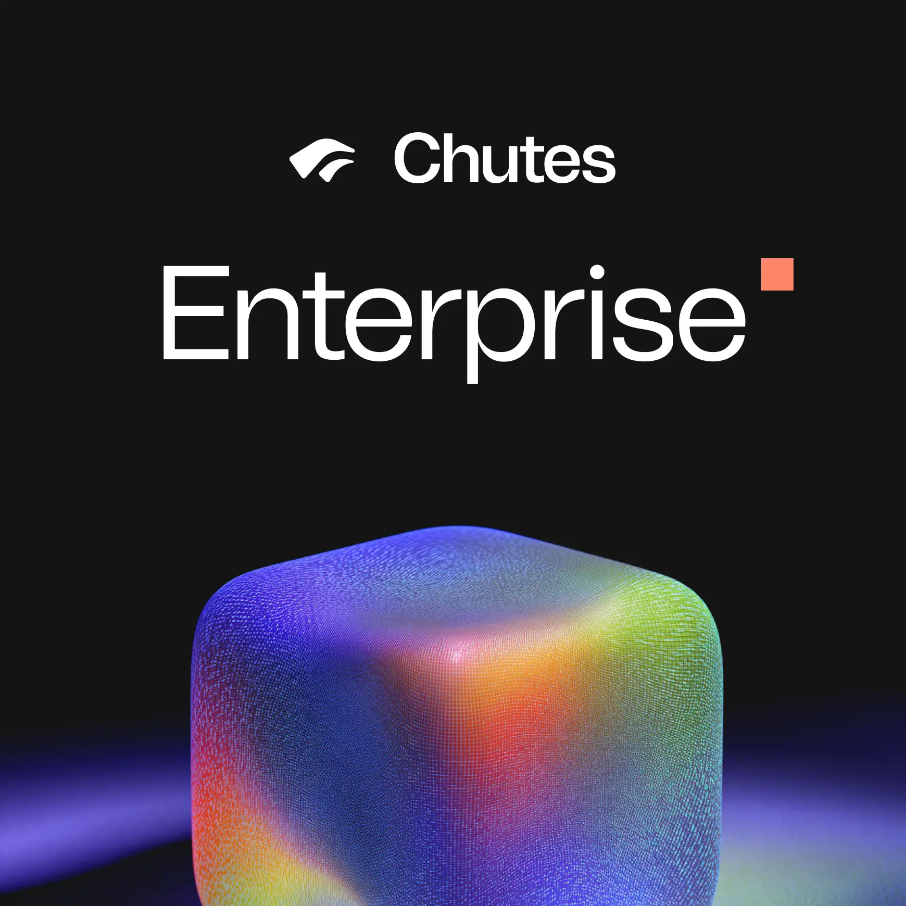
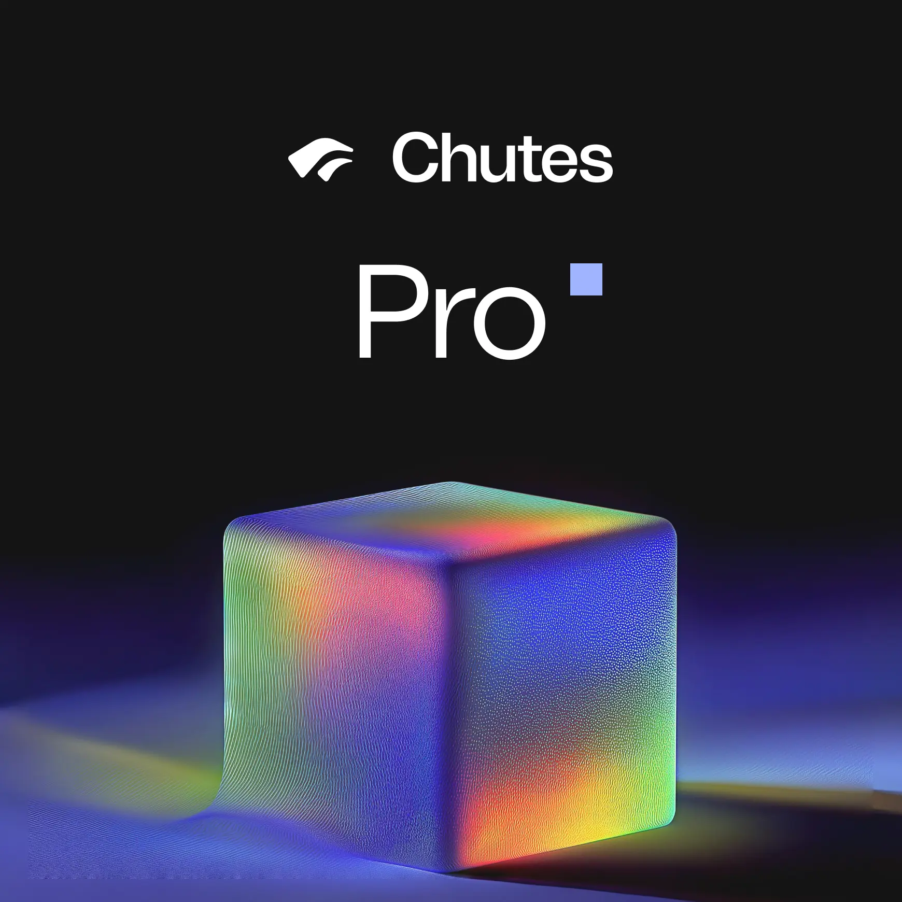